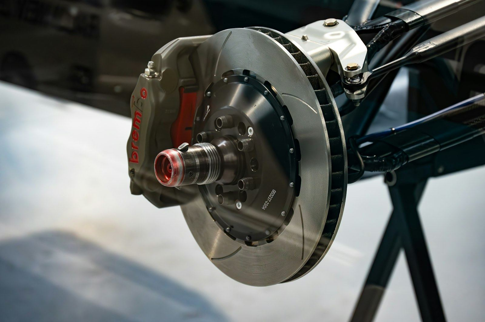
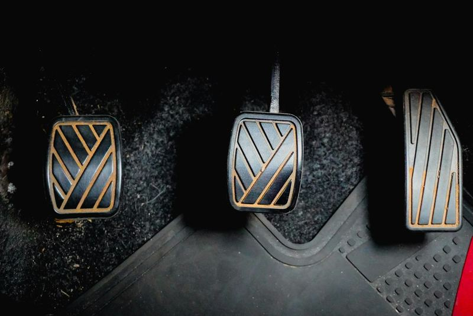
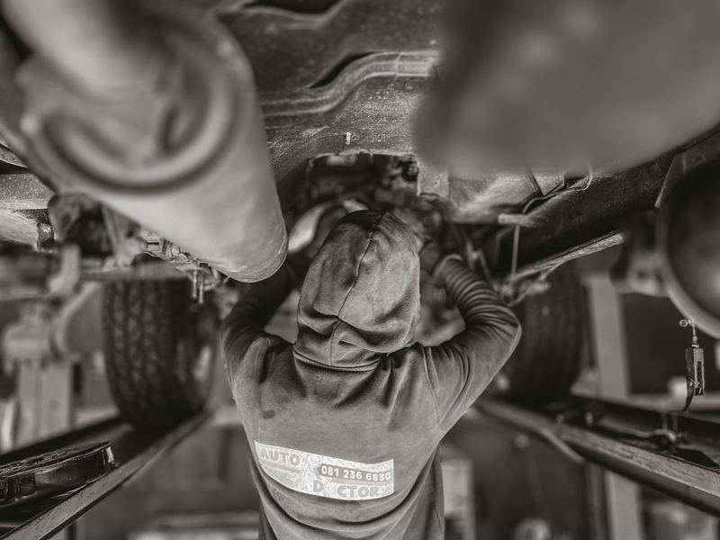
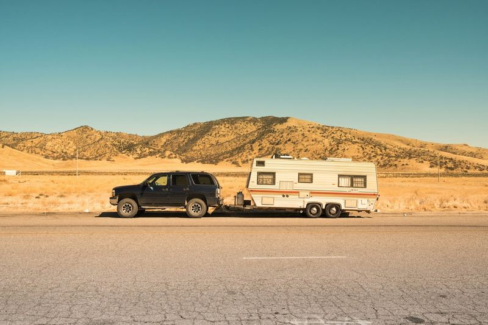

Brzdy a výfuky v Karviné
Autoservis BOLSONCAR Boleslava Foltyna v Karviné-Hranicích. Opravujeme brzdy včetně diagnostiky ABS, výfuky, řízení a spojky, měníme rozvody a montujeme tažná zařízení.
V Hranicích od roku 2004. Termín domluvíme po telefonu.
Specializace: brzdy
Brzdy jsou hlavní prací autoservisu, včetně diagnostiky ABS. Takhle je měníme.

Celá sada na nápravu
Destičky měníme vždy na obou kolech nápravy najednou, nikdy jen na jedné straně.
Díly předepsané pro vaše auto
Používáme jen brzdové destičky, které pro dané vozidlo předepisuje výrobce.
Změříme kotouče
Když je kotouč pod minimální tloušťkou nebo je poškrábaný, měníme oba kotouče na nápravě.
Vyčistíme vedení třmenu
Vodicí čepy očistíme a promažeme, zkorodované vyměníme, aby brzda nedřela.
Jak daleko zastavíte?
Nastavte rychlost a povrch silnice. Spočítáme, kolik metrů auto ujede, než zastaví: během reakce řidiče a při samotném brzdění.

Orientační výpočet pro reakční dobu 1 s a pneumatiky v dobrém stavu. Opotřebené brzdy a pneumatiky dráhu prodlužují.
Co dalšího opravujeme
Kromě brzd a výfuků běžné opravy evropských aut.
- Brzdy a ABSdestičky, kotouče, diagnostika ABS
- Výfukyopravy a výměny výfukové soustavy
- Řízenídrobné opravy řízení
- Spojkyvýměna spojky
- Rozvodyvýměna rozvodové sady
- Diagnostikazákladní diagnostika evropských vozů
- Tažné zařízenímontáž i přihlášení
- Geometrie podvozkuseřízení geometrie



- Autoservis
- BOLSONCAR · Boleslav Foltyn
- Adresa
- Mickiewiczova 141/66
733 01 Karviná-Hranice
Ukázat na mapě - Otevírací doba
- Podle telefonické domluvy
- E-mail a IČO
- bolsoncar@seznam.cz
IČO 70247234